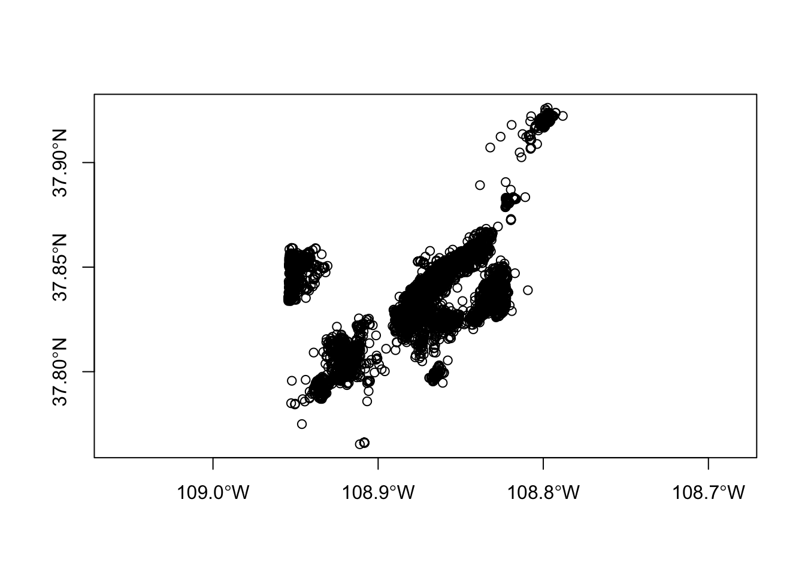
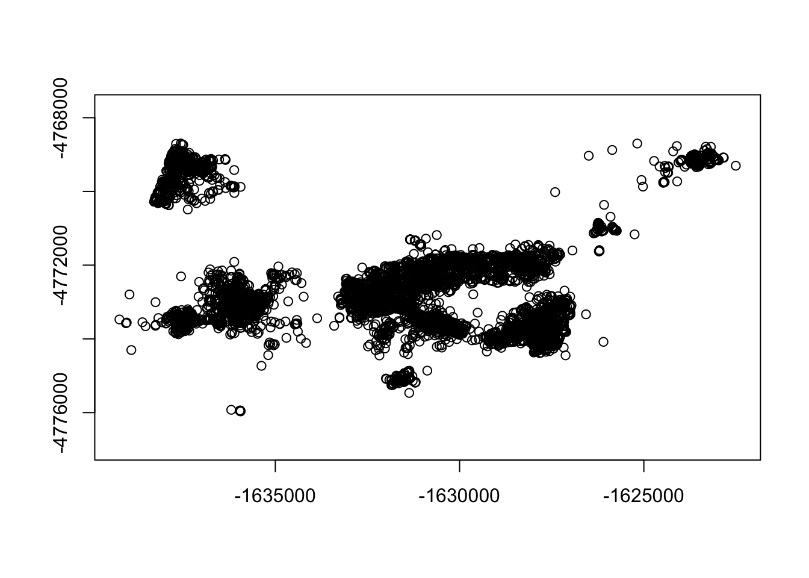
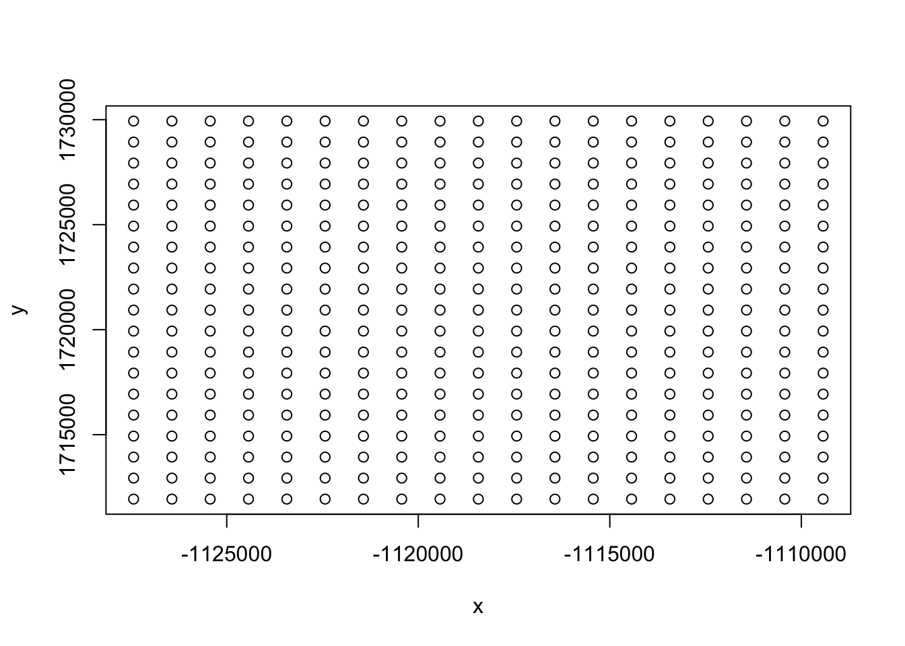
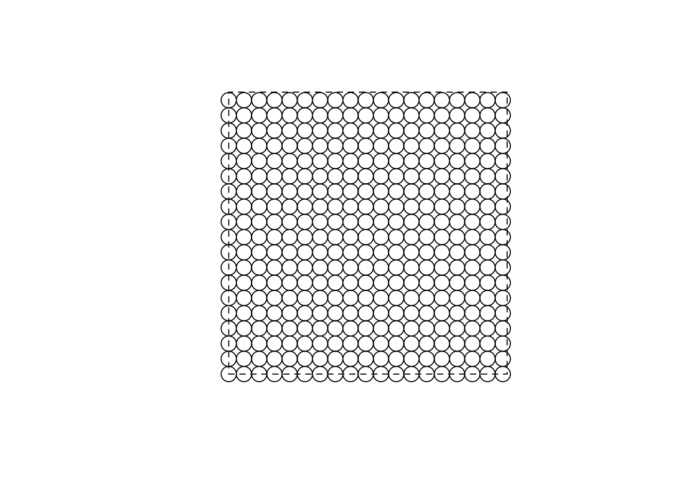
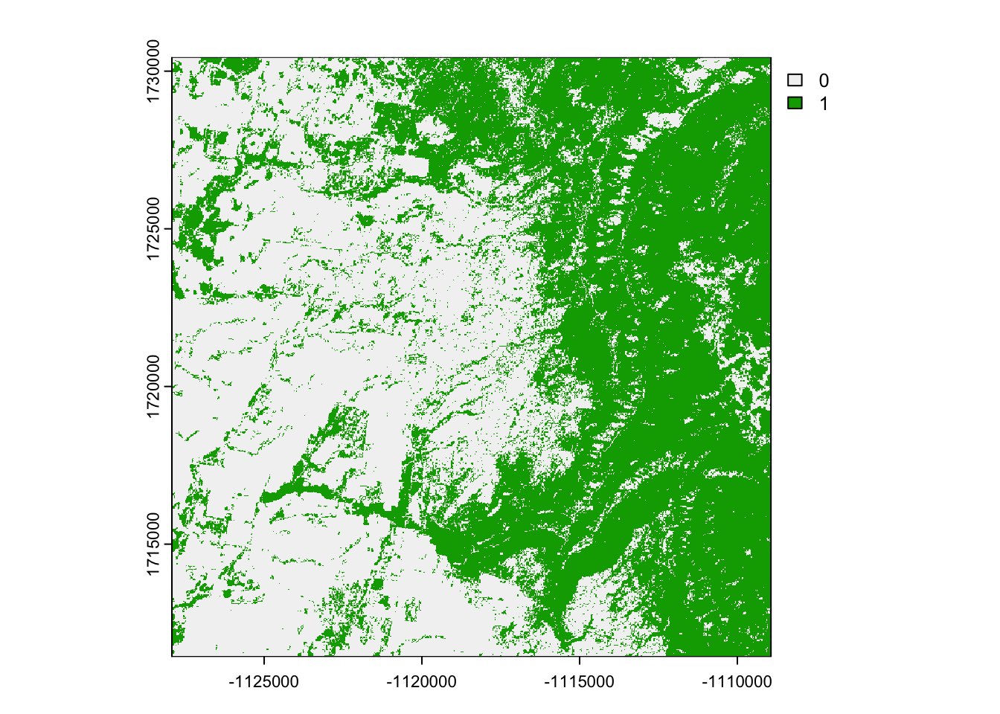
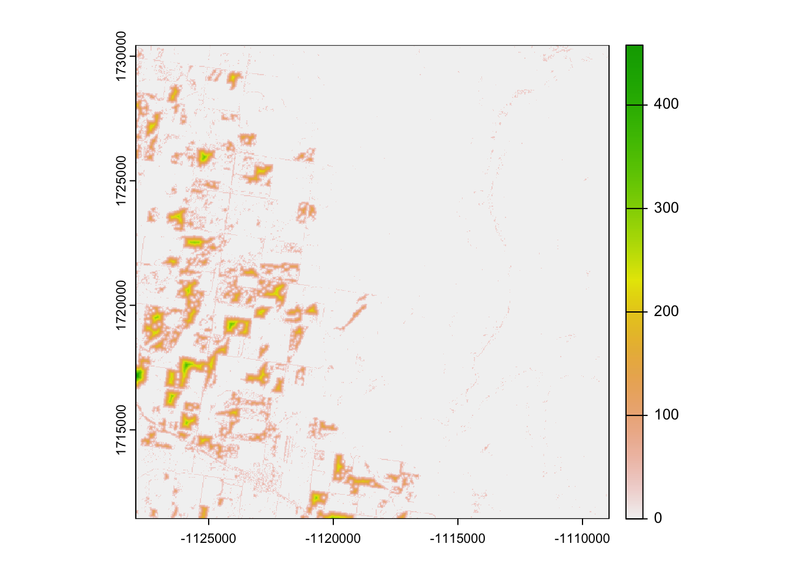
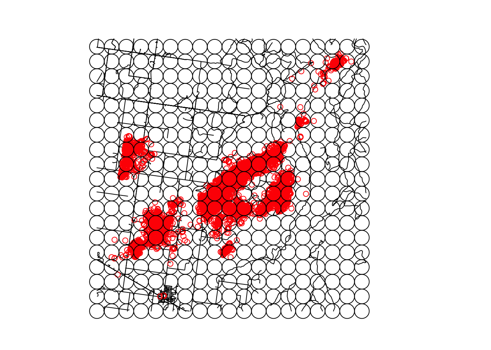
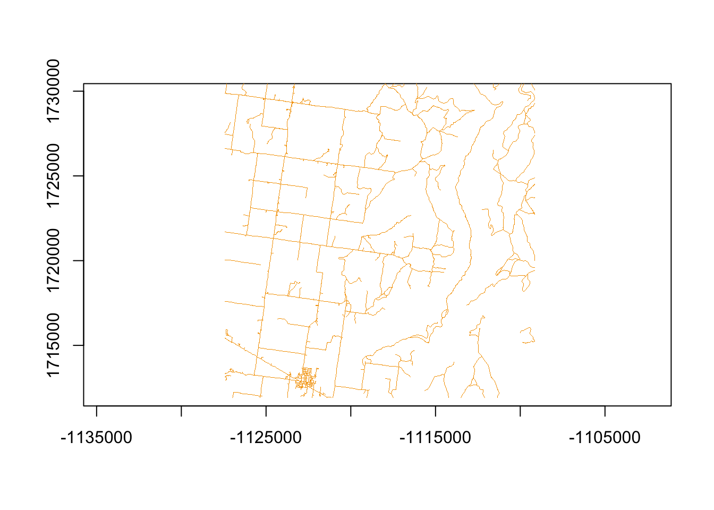
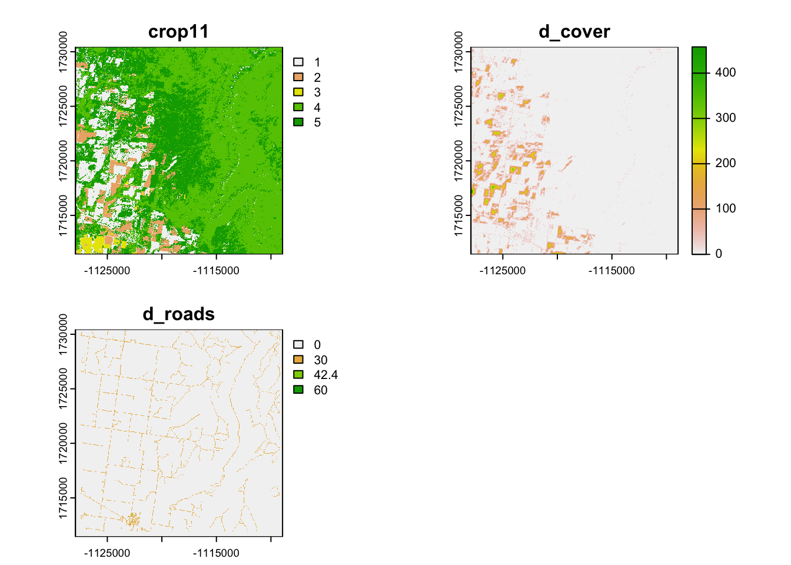

35 Negative Binomial
1. Open the script NegBinomial.Rmd” and run code directly from the script
2. First we need to load the packages needed for the exercise
3. Now let’s have a separate section of code to include projection information we will use throughout the exercise. In previous versions, these lines of code were within each block of code
4. Load files for the mule deer dataset and clean up the dataset as we have done in previous exercises
muleys<-read.csv("data/DCmuleysedited.csv", header=T, sep=",")
muleys$NewDate<-as.POSIXct(muleys$GPSFixTime, format="%Y.%m.%d %H:%M:%S", origin="1970-01-01")
muleys <- subset(muleys, muleys$id != "D19")
##Sort Data
muleys <- muleys[order(muleys$id, muleys$NewDate),]
fix_rate <- function(x){
print(paste("Individual:", x$id[1]))
dates=range(x$NewDate)
print(paste("Range:", dates))
days=as.numeric(round(diff(range(x$NewDate)), digits=0))
print(paste("Number of monitoring days:", days))
sched=as.numeric(round(median(abs(diff(sapply(x$NewDate[2:nrow(x)], difftime, time1 = x$NewDate[1], units = "mins", simplify = T))))))
print(paste("Scheduled fix rate (min):", sched))
expected=as.numeric(days)*round(1440/(as.numeric(sched)), digits=0)#1440 minutes in a day
print(paste("Expected number of positions:", expected))
success <- nrow(x)
print(paste("Number of recorded positions", success))
percentfix <- round(success/expected*100)
print(paste("Fix rate success = ", percentfix,"%", sep=" "))
}
fix_deer <- ddply(muleys, .(as.factor(id)), fix_rate)[1] "Individual: D12"
[1] "Range: 2011-08-12 15:01:53" "Range: 2011-10-24 21:00:48"
[1] "Number of monitoring days: 73"
[1] "Scheduled fix rate (min): 180"
[1] "Expected number of positions: 584"
[1] "Number of recorded positions 120"
[1] "Fix rate success = 21 %"
[1] "Individual: D15"
[1] "Range: 2011-10-12 00:02:03" "Range: 2012-08-31 09:00:51"
[1] "Number of monitoring days: 324"
[1] "Scheduled fix rate (min): 180"
[1] "Expected number of positions: 2592"
[1] "Number of recorded positions 2589"
[1] "Fix rate success = 100 %"
[1] "Individual: D16"
[1] "Range: 2011-10-11 21:00:36" "Range: 2012-07-08 12:01:46"
[1] "Number of monitoring days: 271"
[1] "Scheduled fix rate (min): 180"
[1] "Expected number of positions: 2168"
[1] "Number of recorded positions 2157"
[1] "Fix rate success = 99 %"
[1] "Individual: D4"
[1] "Range: 2010-09-13 21:08:35" "Range: 2012-03-22 15:01:40"
[1] "Number of monitoring days: 556"
[1] "Scheduled fix rate (min): 180"
[1] "Expected number of positions: 4448"
[1] "Number of recorded positions 1304"
[1] "Fix rate success = 29 %"
[1] "Individual: D6"
[1] "Range: 2011-10-11 21:00:39" "Range: 2012-04-11 15:00:48"
[1] "Number of monitoring days: 183"
[1] "Scheduled fix rate (min): 180"
[1] "Expected number of positions: 1464"
[1] "Number of recorded positions 1455"
[1] "Fix rate success = 99 %"
[1] "Individual: D8"
[1] "Range: 2010-09-13 22:07:35" "Range: 2012-03-01 00:02:08"
[1] "Number of monitoring days: 534"
[1] "Scheduled fix rate (min): 180"
[1] "Expected number of positions: 4272"
[1] "Number of recorded positions 971"
[1] "Fix rate success = 23 %"##TIME DIFF NECESSARY IN BBMM CODE
timediff <- diff(muleys$NewDate)*60
## remove first entry without any difference
muleys <- muleys[-1,]
muleys$timelag <-as.numeric(abs(timediff))
##Remove locations greater than 5.5 hours apart in time
muleys <- subset(muleys, muleys$timelag < 19800)
summary(muleys$timelag) Min. 1st Qu. Median Mean 3rd Qu. Max.
3581 10792 10800 10795 10808 14401 muleys <- subset(muleys, muleys$X > 680000)# & muleys$GPS.UTM.Easting != "NA")
muleys$id <- factor(muleys$id)
##Make a spatial data frame of locations after removing outliers
muleysSPDF <- st_as_sf(muleys, coords = c("Long", "Lat"), crs = ll.crs)
plot(st_geometry(muleysSPDF), axes=T)#To visualize all locations
utm.spdf <- st_transform(muleysSPDF, data = muleys, crs = utm.crs)
plot(st_geometry(utm.spdf), axes=T)#To visualize all locations
##change muleysSPDF from UTM to Albers
muleys.spdf <-st_transform(muleysSPDF, crs=albers.crs)
#Subset locations by year for season-specific RSFs if needed
winter2012 <- muleys
# winter2012 <- crop(muleys.spdf,muleysbuffSP)
# winter2012$id <- droplevels(winter2012$id)5. If we get some NA errors because our grid does not encompass our panther locations then we can expand the grid size extending beyond our locations using methods in an earlier exercise.
# Create vectors of the x and y points using boundary box created around deer locations
bb <- st_bbox(muleys.spdf)
increment = 1000
minx=(min(bb$xmin)-(increment))
maxx=(max(bb$xmax)+(increment))
miny=(min(bb$ymin)-(increment))
maxy=(max(bb$ymax)+(increment))
my_bbox = st_bbox(c(xmin = minx, xmax = maxx,
ymin = miny, ymax = maxy),
crs = 5070)
AlbersSP <- st_as_sfc(my_bbox)6. Now we need to set up our sample circles across our study area keeping in mind our discussions on “available” habitats. For this exercise, we will keep it simple by only including a polygon around our mule deer locations. This is for demonstration only, the appropriate study area should be specific to your study design and objectives. We also need to determine what is the appropriate size of our sample circles. In this case, we will use the mean daily movement distance for mule deer we determined to be 628 meters. This will be the radius of our sample circles.
g = expand.grid(
x = seq(my_bbox$xmin, my_bbox$xmax, by = increment),
y = seq(my_bbox$ymin, my_bbox$ymax, by = increment))
g.grid <- st_as_sf(g, coords = c("x", "y"), crs = albers.crs)
#g_sfc <- sfc_point(as.matrix(g)) %>%
# st_set_crs(5070)
plot(g) 
muleysbuffSP2=st_buffer(g.grid,500) %>% st_as_sfc()
plot(st_geometry(muleysbuffSP2))
plot(AlbersSP, add=T, lty=2)
7. We will start here by creating covariate layers specifically for the year of interest, in this case crop data from NRCS for 2011
# Then clip buffer from crop11 layer
crop11 <- rast("data/crop11clip.tif")
mulcrop11clip<-crop(crop11, muleysbuffSP2)
#Crop categories
#1 = Sunflower,summer crops, random crops, grassland
#2 = Winter crops
#3 = Alfalfa
#4 = Forest
#5 = Shrubland
#Reclassify into 5 habitat categories
m11 <- c(-Inf,0,NA, 5.5, 6.5, 1, 22.5, 24.5, 2, 26.5, 27.5, 2, 29.5, 30.5, 2, 35.5, 36.5,
3, 3.5, 4.5, 1, .5, 1.5, 1, 11.5, 12.5, 1, 27.5, 28.5, 1, 31.5, 33.5, 1, 42.5, 43.5, 1,
47.5, 49.5, 1, 58.5, 59.5, 1, 60.5, 61.5, 1, 65.5, 69.5, 1, 76.5, 77.5, 1, 110.5,
111.5, 1, 120.5, 124.5, 1, 130.5, 131.5, 1, 189.5, 190.5, 1, 194.5, 195.5, 1, 228.5,
229.5, 1, 140.5, 143.5, 4, 170.5, 171.5, 1, 180.5, 181.5, 1, 36.5, 37.5, 1, 151.5,
152.5, 5, 41.5, 42.5, 1, 204.5, 205.5, 1, 230,Inf,NA)
rclmat11 <- matrix(m11, ncol=3, byrow=TRUE)
crop11rc <- classify(mulcrop11clip, rclmat11)
plot(crop11rc)
##Create cover layer
cov <- c(-Inf,0,NA, 1, 140, 0, 140.5, 143.5, 1, 151.5,
205.5, 0, 230,Inf,NA)#cover=forest only
rclmatcov <- matrix(cov, ncol=3, byrow=TRUE)
cover <- classify(mulcrop11clip, rclmatcov)
plot(cover)

##Bring in roads layer
roads<-st_read("data/AlbersRoads.shp")Reading layer `AlbersRoads' from data source
`/Users/davidwalter/Library/CloudStorage/OneDrive-ThePennsylvaniaStateUniversity/WalterRprojects/Manual-of-Applied-Spatial-Ecology/data/AlbersRoads.shp'
using driver `ESRI Shapefile'
Simple feature collection with 42674 features and 6 fields
Geometry type: MULTILINESTRING
Dimension: XY
Bounding box: xmin: -1300892 ymin: 1621719 xmax: -989792.6 ymax: 1808098
Projected CRS: NAD_1983_Albers#Clip using AlbersSP
cliproads <- st_intersection(roads, AlbersSP)
plot(st_geometry(cliproads))
plot(st_geometry(muleys.spdf),add=T,col="red")
plot(muleysbuffSP2, add=TRUE)
8. The downside of creating distance to roads with spatstat in Exercise 8.2 is that it is not in a raster so we need to create a raster of distance to roads for every raster cell in layer1 before grabbing values or making our predictive surface.
We will start by using the Rasterize function to create a raster of the road shapefile with crop data used as a mask. A mask will give the spatial resolution and projection information to the raster you plan to create.

d_roadrast <- distance(roadrast,target="1")
##MAKE ALL RASTER LAYERS DATAFRAMES TO COMBINE LATER
crop11df <- as.data.frame(crop11rc, xy=TRUE)
#Distance to cover
d_covdf <- as.data.frame(d_cover, xy=TRUE)
#Distance to roads
final_roaddf <- as.data.frame(d_roadrast, xy=TRUE)
#Combine data frames for Crop and Distance to Cover and Roads
layers1 = cbind(crop11df, d_covdf,final_roaddf)
layers1 = layers1[,c(3,6,9,7:8)]
names(layers1) = c("crop","d_cover","d_roads","x", "y")
#write.table(layers1,"layer1.txt",sep=",",col.names=TRUE, quote=FALSE)
compareGeom(crop11rc,d_cover,d_roadrast)[1] TRUE#Now we need to extract all raster layers, grid and create a stack of all rasters
r <- c(crop11rc, d_cover, d_roadrast)
names(r) <- c("crop11","d_cover","d_roads")
plot(r)
names(r)[1] "crop11" "d_cover" "d_roads"ext <- exact_extract(r, muleysbuffSP2, function(values, coverage_fraction) weighted.mean(values,coverage_fraction,na.rm=TRUE), stack_apply=TRUE)
|
| | 0%
|
| | 1%
|
|= | 1%
|
|= | 2%
|
|== | 2%
|
|== | 3%
|
|=== | 4%
|
|=== | 5%
|
|==== | 5%
|
|==== | 6%
|
|===== | 7%
|
|===== | 8%
|
|====== | 8%
|
|====== | 9%
|
|======= | 9%
|
|======= | 10%
|
|======= | 11%
|
|======== | 11%
|
|======== | 12%
|
|========= | 12%
|
|========= | 13%
|
|========== | 14%
|
|========== | 15%
|
|=========== | 15%
|
|=========== | 16%
|
|============ | 17%
|
|============ | 18%
|
|============= | 18%
|
|============= | 19%
|
|============== | 19%
|
|============== | 20%
|
|=============== | 21%
|
|=============== | 22%
|
|================ | 22%
|
|================ | 23%
|
|================ | 24%
|
|================= | 24%
|
|================= | 25%
|
|================== | 25%
|
|================== | 26%
|
|=================== | 27%
|
|=================== | 28%
|
|==================== | 28%
|
|==================== | 29%
|
|===================== | 29%
|
|===================== | 30%
|
|====================== | 31%
|
|====================== | 32%
|
|======================= | 32%
|
|======================= | 33%
|
|======================= | 34%
|
|======================== | 34%
|
|======================== | 35%
|
|========================= | 35%
|
|========================= | 36%
|
|========================== | 37%
|
|========================== | 38%
|
|=========================== | 38%
|
|=========================== | 39%
|
|============================ | 39%
|
|============================ | 40%
|
|============================= | 41%
|
|============================= | 42%
|
|============================== | 42%
|
|============================== | 43%
|
|=============================== | 44%
|
|=============================== | 45%
|
|================================ | 45%
|
|================================ | 46%
|
|================================= | 47%
|
|================================= | 48%
|
|================================== | 48%
|
|================================== | 49%
|
|=================================== | 49%
|
|=================================== | 50%
|
|=================================== | 51%
|
|==================================== | 51%
|
|==================================== | 52%
|
|===================================== | 52%
|
|===================================== | 53%
|
|====================================== | 54%
|
|====================================== | 55%
|
|======================================= | 55%
|
|======================================= | 56%
|
|======================================== | 57%
|
|======================================== | 58%
|
|========================================= | 58%
|
|========================================= | 59%
|
|========================================== | 60%
|
|========================================== | 61%
|
|=========================================== | 61%
|
|=========================================== | 62%
|
|============================================ | 62%
|
|============================================ | 63%
|
|============================================= | 64%
|
|============================================= | 65%
|
|============================================== | 65%
|
|============================================== | 66%
|
|=============================================== | 66%
|
|=============================================== | 67%
|
|=============================================== | 68%
|
|================================================ | 68%
|
|================================================ | 69%
|
|================================================= | 70%
|
|================================================= | 71%
|
|================================================== | 71%
|
|================================================== | 72%
|
|=================================================== | 72%
|
|=================================================== | 73%
|
|==================================================== | 74%
|
|==================================================== | 75%
|
|===================================================== | 75%
|
|===================================================== | 76%
|
|====================================================== | 76%
|
|====================================================== | 77%
|
|====================================================== | 78%
|
|======================================================= | 78%
|
|======================================================= | 79%
|
|======================================================== | 80%
|
|======================================================== | 81%
|
|========================================================= | 81%
|
|========================================================= | 82%
|
|========================================================== | 82%
|
|========================================================== | 83%
|
|=========================================================== | 84%
|
|=========================================================== | 85%
|
|============================================================ | 85%
|
|============================================================ | 86%
|
|============================================================= | 87%
|
|============================================================= | 88%
|
|============================================================== | 88%
|
|============================================================== | 89%
|
|=============================================================== | 89%
|
|=============================================================== | 90%
|
|=============================================================== | 91%
|
|================================================================ | 91%
|
|================================================================ | 92%
|
|================================================================= | 92%
|
|================================================================= | 93%
|
|================================================================== | 94%
|
|================================================================== | 95%
|
|=================================================================== | 95%
|
|=================================================================== | 96%
|
|==================================================================== | 97%
|
|==================================================================== | 98%
|
|===================================================================== | 98%
|
|===================================================================== | 99%
|
|======================================================================| 99%
|
|======================================================================| 100%#NOTE above that for each buffered circle in the study area, the "exact_extract" function resulted in means for distance to cover and roads for all sample circles but "crop" resulted in mean cover categories so need to run separate with more appropriate code (see below).9. Code below extracts by land cover category and determines how many cells of each type were in each sample circle.
sum_cover <- function(x){
list(x %>%
group_by(value) %>%
summarize(total_area = sum(coverage_area)) %>%
mutate(proportion = total_area/sum(total_area)))
}
#extract the area of each raster cell covered by the plot and summarize
ex_crop <- exact_extract(crop11rc, muleysbuffSP2, coverage_area = TRUE, summarize_df = TRUE, fun = sum_cover)
ex_crop <- exact_extract(crop11rc, muleysbuffSP2, coverage_area = TRUE)
#
# #add polygon names that the results will be grouped by
# names(ex_crop) <- muleysbuffSP2$ID
muleysbuffSP3 <- vect(muleysbuffSP2)
ex_crop <- terra::extract(crop11rc,muleysbuffSP3,list=TRUE)
#
ex_crop[11:15,]
#What issue do you notice with habitat categories?
############################################
#Code here thanks to Tyler Wagner, PA Coop Unit, for creating this loop to summarize
#proportions of habitat within each grid cell
############################################
##Created land use categories
lus <- 1:5
##### Loop through and append missing land use categories to each grid cell
ex_crop_new <- list()
for(i in 1:length(ex_crop_new)[1] ){
# Land use cats in a given cell
temp1 <- unique(ex_crop$value[[i]])
# Give missing category 999 value
ma1 <- match(lus, temp1, nomatch = 999, incomparables = NULL)
# Get location (category of missing land use type)
miss <- which(ma1%in%999)
ex_crop_new[[i]] <- c(ex_crop[[i]], miss)
}
# New summary of land use in a grid cell
tab2 <- lapply(ex_crop_new, table)
tab2[[18]]
tab[[18]]
tab <- list(ex_crop)
# Proportions of all land cover types per grid cell
prop <- list()
for(i in 1:length(ex_crop)[1] ){
prop[[i]] <- round((margin.table(ex_crop[[i]],1)/margin.table(ex_crop[[i]])),digits = 6)
}
#Function coredata is from the zoo package to convert the proportions from a list
#to a matrix
M <- coredata(do.call(cbind, lapply(prop, zoo)))
colnames(M) <- NULL
#Transpose matrix so land cover become separate columns of data
matrix <- t(M)
#Now convert the matrix to a data frame so it is easier to manipulate
dfland <- as.data.frame(matrix)
#Assing column names to land cover
colnames(dfland) <- c("sunflower","wintercrop","alfalfa","forest","shrub")
#Write out csv with new nlcd circle percents
#write.csv(dfland,paste(".", "circl_perc_nlcd.csv",sep=""))10. Now that we have Land Cover in a similar format as the distance-to-derived data, we want to convert ext(the combined extracted rasters) into a data frame so it is easier to manipulate as well. The “extract” function in the raster package is supposed to be able to do this but does not work for some reason.
a <- as.data.frame(ext)
habitat_units_buffwin12 <- cbind(dfland, a)11. Now we need to convert to a data frame for nb modeling. Read in animal_locations.txt or convert to data frame from above
#locations = read.table("deer_locations.txt", sep='\t', header=T)
locations.spdf <- crop(muleys.spdf,muleysbuffSP)
locations.df = as.data.frame(locations.spdf)
#locations.df = as.data.frame(winter2012)
locations <- locations.df[c(-1,-3:-24)]
#Add xy columns of circle centroids
mbuff.xy <- as.data.frame(grid.pts)
str(mbuff.xy)
habitat_units_buffwin12$x <- mbuff.xy$x
habitat_units_buffwin12$y <- mbuff.xy$y
plot(habitat_units_buffwin12$x, habitat_units_buffwin12$y, type='p', cex=1.5)
points(locations$x, locations$y, col="red", cex=0.5, pch=19)
plot(mbuff.spdf, add=T)12. Calculate number of animal locations in each sampled habitat unit(see code in “count_locations.R”).
# Source code file containing functions used below.
source("count_locations.R")
pooled.locations = locations
colnames(pooled.locations) <- c("ID","x","y")
pooled.locations$ID = 1
NB = F.count.relocations(locations.df = pooled.locations,
habitat.units.df = habitat_units_buffwin12,
habitat.unit.size = 628)
# List of column names:
names(NB)
#Look at the range in number of locations in our sample circles
summary(NB$n.locations)
#Now run a population-level model for a few covariates (forest, road). NOTE: If you run models for each animal, will have to average coefficients across animals and top model(s)
nb = glm.nb(n.locations ~ offset(log(total)) + forest + road, data=NB)
summary(nb)
#-----------------------------------------------------------------------------------
# Proportion of 0 counts in data
sum(NB$n.locations == 0)/nrow(NB)
nb.density = structure(
function # Probability mass function for NB2
# Description: This function gives the probability that a discrete random variable, X,
#is exactly equal to some value according to a NB2 distribution.
# Returns: Pr(X=k)
(k,
### value at which to estimate probability
### Pr(X=k)
mu,
### NB2 estimate of mu
theta
### NB2 estimate of theta
){
(gamma(theta+k)/(gamma(theta)*factorial(k)))*
(mu^k)*(theta^theta)/
((mu+theta)^(theta+k))
})
# Expected proportion under NB2 model
nb.density(k=0, mu=mean(NB$n.locations), theta=0.1861)
# (Note: use estimated theta of the model output found in summary statement above)
# The value above can be interpreted as:
# "A NB2 distribution with theta=0.1861 and mu=0.9196 should have an average of 32% zero values"
#Observed
zero = NB$n.locations == 0
sum(zero) #total number of zeros
mean(zero) #proportion that are zeros
#Expected based on NB distribution and our observed over-dispersions
theta = mean(NB$n.locations)^2 / (var(NB$n.locations) - mean(NB$n.locations))
check = rnegbin(n=10000, mu=mean(NB$n.locations), theta=theta)
check.zeros = check == 0
mean(check.zeros)
#saveRDS(habitat_units_buffwin12, "Exercise.8.6.rds")